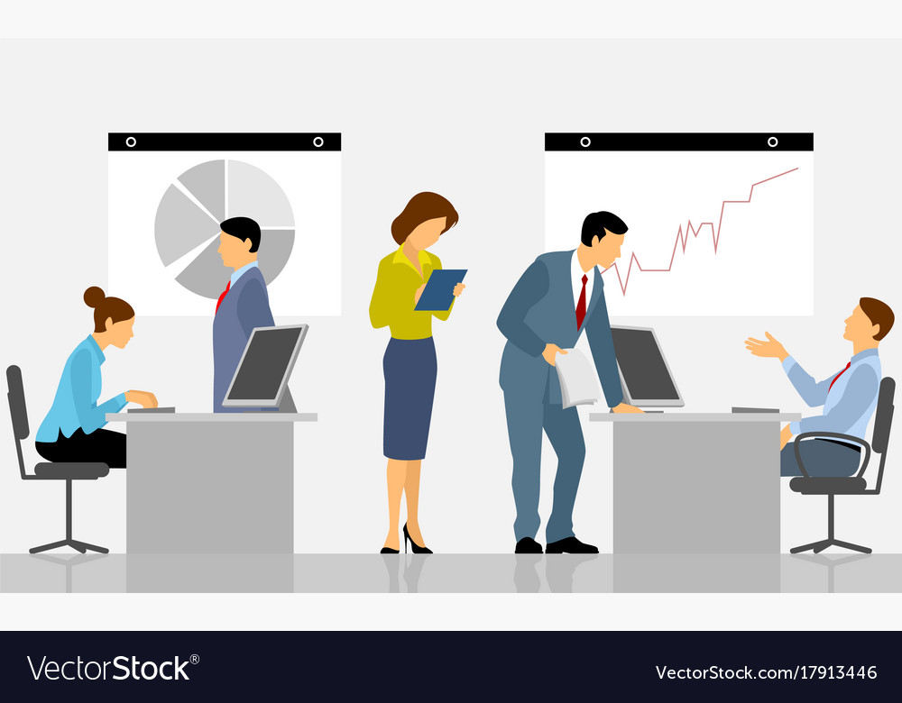

Explore Our Features
Optimization
Productivity
 WorkflowWorkflow
WorkflowWorkflowWorkflow optimization is the use of strategies and tactics to increase efficiency of administrative, industrial, and other processes within an organization. Successful workflow optimization will reduce costs, incidence of errors, and time spent completing tasks.
Productive efficiency is a point at which the economy or a business entity can produce the maximum quantity of goods. This is achieved by strategic allocation of finite resources—capital, labor, equipment, material, technology, and energy.
Office workflows are the ways you complete tasks to achieve a business or organisational goal. For example, you collect payments for your work and services and then follow a series of steps to add those payments to accounting software and check everything matches up.